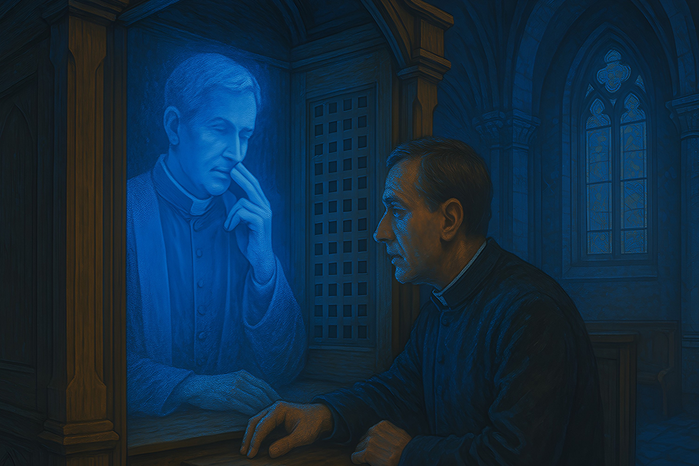

La Iglesia Católica y la Inteligencia Artificial
¿Amigos o enemigos? El Vaticano sorprende con su mirada sobre el futuro tecnológico.
¿Amigos o enemigos? El Vaticano sorprende con su mirada sobre el futuro tecnológico.

¿Un Jesús holográfico dando consejos en una iglesia suiza? No es ciencia ficción: pasó de verdad. Y este caso refleja algo mucho más profundo. La Iglesia Católica se está tomando en serio el impacto de la inteligencia artificial (IA) y lleva años analizando sus luces y sus sombras…
Sí, aunque a muchos les parezca que el Vaticano está atrapado en el pasado, la verdad es que desde 2016 ha impulsado foros, investigaciones y documentos para entender cómo la IA afecta distintos ámbitos: educación, salud, trabajo, relaciones humanas e incluso conflictos armados. Para la Iglesia, esta tecnología es una “gran oportunidad”, pero también una fuente de riesgos éticos si no se gestiona con responsabilidad.
La preocupación más fuerte viene del control que unas pocas grandes empresas ejercen sobre el desarrollo de la IA. ¿Y si esta tecnología se usa para manipular la opinión pública o profundizar desigualdades? Ahí la Iglesia prende las alertas. Y ni hablar de su uso en armas autónomas, capaces de decidir a quién atacar sin intervención humana. Para el Vaticano, permitir que una máquina tenga ese poder es simplemente inaceptable.
Pero no todo es advertencia. En ámbitos como la comunicación y la educación, la Iglesia propone usar la IA como una aliada que potencie lo humano, nunca como un reemplazo. “La inteligencia artificial debe estar al servicio del bien común”, dijo el Papa Francisco en su mensaje del 1 de enero de 2024, durante la 57ª Jornada Mundial de la Paz.

Entonces, ¿confesarse con un holograma es el futuro? Quizás. Pero la Iglesia es clara: por más sofisticada que sea la tecnología, jamás podrá reemplazar la capacidad humana de amar, comprender y decidir con conciencia.
Y tú, ¿crees que una máquina podría guiar tu vida espiritual? ¿O hay cosas que siempre deberían quedar en manos humanas? La conversación apenas comienza.
 Tecnología
TecnologíaSi eres como yo y revisas TikTok e Instagram constantemente, te habrás dado cuenta de que estas redes son casi como un experimento social.
 Tecnología
TecnologíaHablamos mucho de inteligencia artificial. La tenemos integrada en nuestra vida, nos ayuda en nuestros trabajos y le preguntamos cosas de…
 Tecnología
TecnologíaDurante años hemos pensado en la inteligencia artificial como algo súper frío: servidores gigantes, computadores procesando datos y…